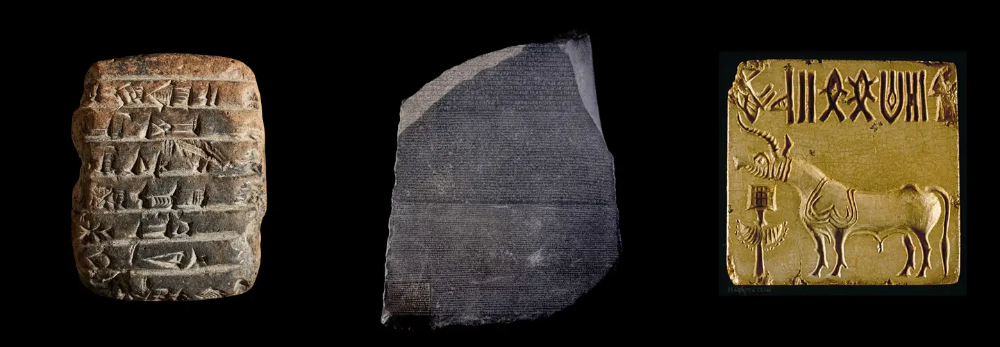

Hur städer, skrift och styre uppstod oberoende av varandra på tre kontinenter
Pedagogisk uppskattning, inte exakta tal, av hur stor del av historien vi kan rekonstruera
Hur stormakterna i Främre orienten, Afrika, Asien och Amerika band samman sin tid, och hur hela systemet gick under
Runt 1200 f.Kr. rasade den sammankopplade värld som bronsåldern byggt upp på bara några decennier. Hettiternas rike försvann från historiens karta. Den mykenska kulturen i Grekland gick under. Städer längs hela östra Medelhavets kust brändes ned eller övergavs, och handelsnätverken som förbundit Egypten med Mesopotamien i århundraden tystnade.
Varför det hände är en av arkeologins stora olösta frågor. Troligen rör det sig om flera samverkande orsaker: långvarig torka och missväxt, interna sociala spänningar, och en rörelse av folkgrupper som antika källor kallar Sjöfolken. Avgörande var också att tennhandeln bröt samman. Tenn var ett nödvändigt råmaterial för att smälta brons, och utan brons stannade hela den militärteknologi som dåtidens stater vilade på.
Det viktigaste att förstå är att ingen enskild orsak räcker som förklaring. Bronsålderskollapsen var en systemkrasch: just för att samhällena var så tätt sammankopplade förstärkte varje störning nästa, tills hela nätverket föll.
Kulturerna som skapade världens infrastruktur, och hur deras arv hamnade i fel händers historieskrivning
Axlarna visar relativ styrka på en pedagogisk skala, inte absoluta mått. Syftet är att synliggöra varje imperiums profil och jämföra dem.